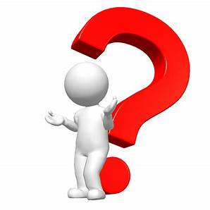
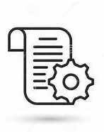
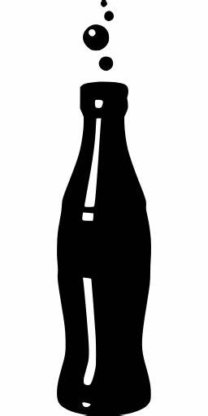
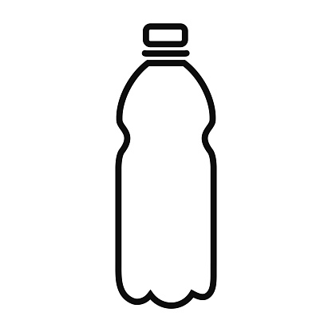
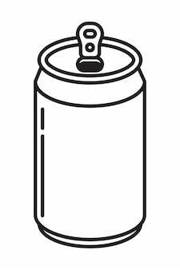

Apropos:
1-C'est quoi SBGS ? :

La société SBGS(Société des Boissons Gazeuses du Souss) a été créée en 1 août 1971 par MONSIEUR HASSANE EL MASSOUDI, sur une surface qui n'a pas dépassé 1000 m2
au début. Cette création qui a
nécessité un effectif de 150 employés, et un capital de 100000.00 Drh investie
principalement sous forme de machines industrielles qui permettaient à la société une
production qui s'élève à 12000 bouteilles/h.
La société des boissons gazeuses du Souss
est devienne l'une des plus grandes sociétés dans la région du sud.
La société des boissons gazeuses du Souss est une société anonyme
(S.A), situé à la Zone industrielle TASSILA, AGADIR a pour activité la mise en
bouteille et la distribution des boissons gazeuses et des eaux de table.
2-Fiche technique :

| Raison sociale |
Société des Boissons Gazeuses du Souss (SBGS) |
| Date de création |
1 Aout 1971 |
| Activité |
La mise en bouteille et la distribution des boissons gazeuses et des eaux de table. |
| Forme juridique |
S.A (société anonyme) |
| Capital social |
30.000.000 DH |
| Siege social |
Zone industrielle TASSILA, AGADIR |
| Effectif |
40 cadres et 350 employés |
| D'identification |
251131 |
| Patente |
48763705 |
| Registre commerce |
93/340 |
3-les différents types de bouteilles de notre société:

Avantages de bouteille plastique :
Il est léger, ce qui rend le transport de produits plus durable et efficace.
Il est solide.
Il s'agit d'un matériau de premier ordre pour conserver la qualité et garantir la sécurité de nos boissons.
Il est clair et transparent (bonne visibilité du produit les consommateurs trouvent que c'est important).
Il peut être façonné dans presque toutes les formes et les tailles de bouteilles. ..

Avantages de bouteille en verre :
Les récipients en verre sont inertes au contact des aliments, ne s'oxydent pas, sont imperméables aux gaz et ne nécessitent pas d'additifs pour conserver les aliments emballés. En outre, le verre utilisé dans les conteneurs ne migre pas dans le produit.
Le verre préserve les minéraux et les propriétés nutritionnelles des aliments, ainsi que leurs saveurs.
Les bouteilles en verre ne gardent pas les odeurs des boissons, ce qui n'est pas toujours le cas avec les contenants en plastique.
Le verre est écologique, réutilisable et recyclable. Il ne présente aucun danger pour l'environnement, car il ne libère pas de produit toxique contrairement au plastique.

Avantages de canette :
les canettes à un poids léger
une facilité d'empilage et une résistance relative.
les canettes d'aluminium sous forme de produit fini peuvent être transportées de façon sécuritaire et permettent la réduction des coûts de transport et des émissions.